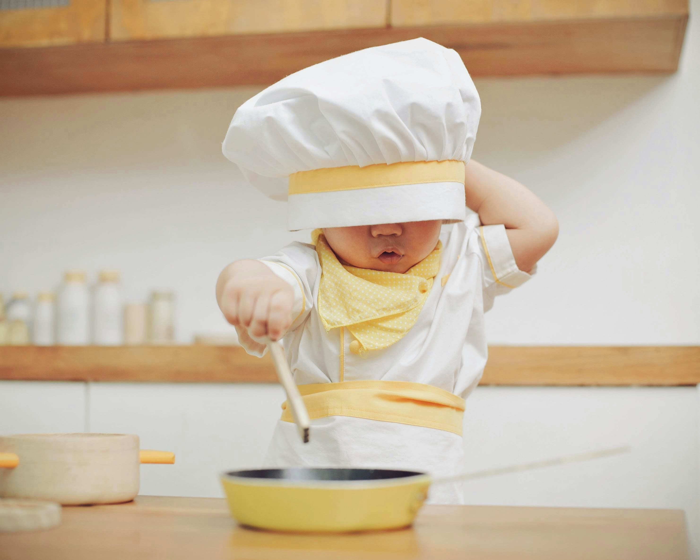
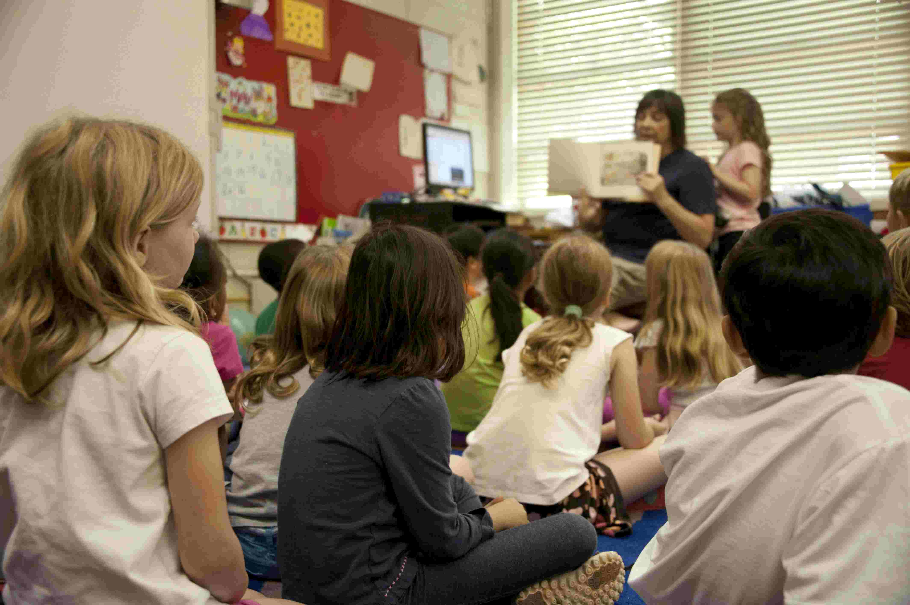
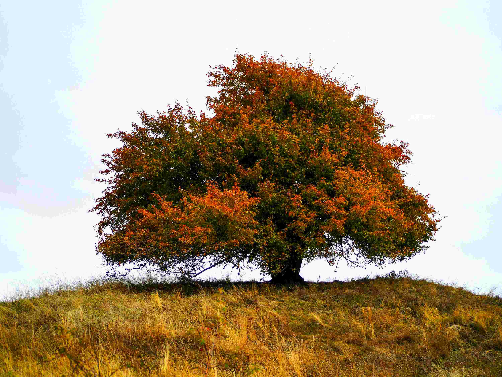

Mūsu pieejas un praktiskās metodes
Pieejas
Biedrība “Inovatīvās prakses centrs "Osta"” jau no savas darbības pirmsākumiem ir īstenojusi inovatīvas,
uz cilvēka stiprajām pusēm balstītas pieejas darbā ar cilvēkiem un kopienām.
Mūsu darbā būtisku vietu ieņem naratīvā pieeja, kuras pamatā ir pārliecība, ka cilvēki nav savas problēmas – viņi ir sava dzīves stāsta veidotāji un pārrakstītāji.
Mēs palīdzam cilvēkiem izpētīt un stiprināt stāstus, kas atspoguļo viņu vērtības, spēku un attīstības potenciālu.
Darbs balstās uz cieņpilnu sarunu, kurā cilvēks tiek uzlūkots kā eksperts savā dzīvē, bet speciālists – kā ieinteresēts sarunas partneris.
Tāpat mēs aktīvi izmantojam uz risinājumu vērsto pieeju, kas koncentrējas nevis uz problēmu analīzi, bet uz iespējām,
cerību un mazām pārmaiņām, kuras cilvēks jau spēj saskatīt un īstenot. Šī pieeja veicina līdzdalību, uzticēšanos un cilvēka pašefektivitātes sajūtu – tā ir praktiska, cieņpilna un piemērojama visdažādākajās dzīves situācijās.
Mēs esam apņēmušies strādāt saskaņā ar atveseļošanās (recovery) modeļa principiem, kas nozīmē cieņu pret cilvēka individuālo ceļu, identitāti un tiesībām uz pilnvērtīgu dzīvi sabiedrībā. Atveseļošanās nav tikai simptomu mazināšana – tā ir iespēja atgūt nozīmīgas attiecības, mērķus un piederību, pat dzīvojot ar ilgstošām grūtībām.
Praktiskās metodes

Kids Skills
Kids’ Skills ir radoša un pozitīva metode, ko izstrādājis somu psihoterapeits Bens Furmans. Tā palīdz bērniem pārvarēt grūtības, koncentrējoties nevis uz problēmu, bet uz jaunu prasmju apgūšanu, izmantojot spēli, atbalstu un bērna stiprās puses. Pieejā tiek aktīvi iesaistīti vecāki, skolotāji un draugi, padarot mācīšanos par iedvesmojošu un iekļaujošu procesu.
Aleksandra Pavlovska ir oficiālā Kids’ Skills vēstnese Latvijā, veicinot šīs pieejas izmantošanu darbā ar bērniem un ģimenēm.
Lasīt vairāk par Kids’ Skills metodi

Strādā ar to, kas darbojas - WOWW metode (Working on What Works)
WOWW metode (Working On What Works) ir uz risinājumu vērsta pieejas metode, ko izstrādājusi Insoo Kim Berg un kas pielāgota izmantošanai skolās un izglītības vidē. Tā ir efektīvs rīks, lai risinātu konfliktus klasē, uzlabotu skolēnu uzvedību un samazinātu mobinga (bullying) gadījumus, radot drošu un atbalstošu mācību vidi.
WOWW metode aicina skolotājus, skolēnus un ģimenes koncentrēties uz to, kas jau darbojas — uz stiprajām pusēm, panākumiem un pozitīvo uzvedību, nevis problēmām. Mācību procesā tiek izmantoti konkrēti rīki — kā, piemēram, skaitīšanas skalas, pozitīvu novērojumu fiksēšana un regulāra atzinību sniegšana —, lai stiprinātu motivāciju un veicinātu cieņpilnu atmosfēru klasē.
WOWW nosaukums — “Working On What Works” — uzsver sadarbību un uzticēšanos: ko mēs varam darīt vairāk, lai labais nostiprinātos un vairotos. Pieeja ne tikai palīdz uzlabot klases mikroklimatu un skolēnu iesaisti, bet arī veicina emocionālo labklājību un uzticību starp bērniem un pieaugušajiem.
Lasīt vairāk par "Strādā ar to, kas darbojas" metodi

Ģimenes grupas konference
Ģimenes grupas konference ir strukturēta metode lēmumu pieņemšanai, kas sākotnēji attīstīta Jaunzēlandē, lai stiprinātu bērna un ģimenes balsi sociālajā darbā. Tā ļauj pašai ģimenei un tuvajiem cilvēkiem sanākt kopā, izprast situāciju un vienoties par plānu bērna vai jaunieša labā. Konference balstās uz cieņu, sadarbību un pārliecību, ka risinājumi vislabāk rodami ģimenes vidū.
Arsenijs Pavlovskis jau daudzus gadus vada un koordinē ģimenes konferences dažādos kontekstos, kā arī pasniedz šo metodi speciālistiem Latvijā un citviet.
Lasīt vairāk par Ģimenes grupas konferencēm

Dzīvības koks
Dzīvības koks ir naratīvās prakses metode, kas palīdz cilvēkiem izzināt un stiprināt savu identitāti, balstoties uz viņu pieredzi, saknēm, vērtībām un dzīves resursiem. Izmantojot koka metaforu, dalībnieki veido savu "dzīvības koku", runājot par to, kas viņus veido, kur viņi smeļ spēku un kā viņi tiek galā ar grūtībām. Tā ir radoša, cieņpilna un iedrošinoša pieeja, kas veicina piederības un cerības sajūtu.
Centra speciālisti izmanto Dzīvības koka metodi darbā ar dažādām mērķgrupām – pusaudžiem, cilvēkiem ar garīga rakstura traucējumiem, kā arī ar tiem, kuri dzīvo ar atkarību pieredzi. Tā palīdz ieraudzīt savu vērtību arī sarežģītās dzīves situācijās.
Lasīt vairāk par Dzīvības koku
Bibliotēka: Sociālais darbs un konsultēšana
-
Pavlovska, A., Pavlovskis, A. (2021).
Uz risinājumu vērstā pieeja sociālā darba ar gadījumu.
In: Roga-Vailza, V., Ozola, I., Apine, L. (red.),
Sociālais darbs ar gadījumu: Teorija praksē, 2. sējums. Rīga: Labklājības ministrija, AC Konsultācijas.
Grāmata "Sociālais darbs ar gadījumu" PDF formātā
-
Pavlovska, A. (2023. g. maijs).
Prezentācija par atbalstītu lēmumu pieņemšanu cilvēkiem ar garīga rakstura traucējumiem Latvijā.
Konference “Сучасні тенденції розвитку соціальної роботи в Україні та за кордоном”, Ivano-Frankivska, Ukraina.
Skatīt konferences lapu
-
Pavlovskis, A. (2017).
Sadarbības pieejas sociālajā darbā ar pusaudžiem un viņu ģimenēm.
Sociālais darbs Latvijā, 2017. gada 1. numurs, lpp. 41.–45.
Lejupielādēt PDF
-
Pavlovskis, A. (2022). “Spēks vajadzīgs, lai pateiktu paldies”. Intervija ar Arseniju Pavlovski,
Sociālais darbs Latvijā, 2022. gada 1.numurs, lpp. 19.
Intervija PDF formatā
-
Pavlovskij, A. (2015).
Социальная работа с подростками с опорой на сильные стороны. Kyiv: AFEW Ukraina, 108 lpp.
Grāmata krievu valodā